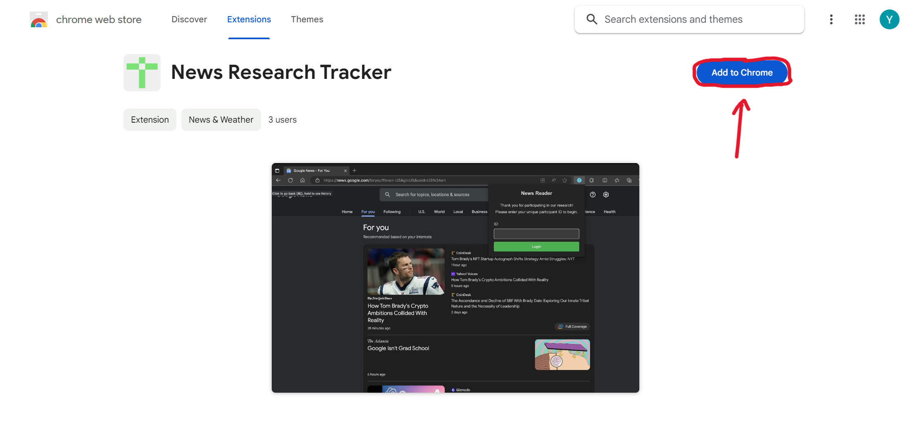
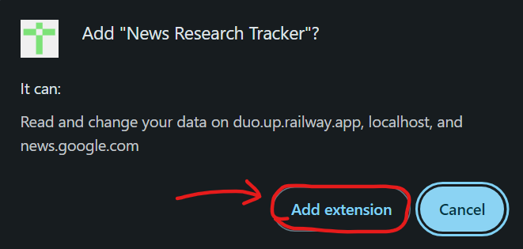
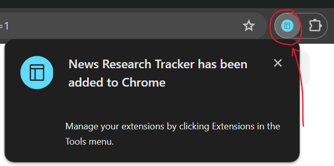
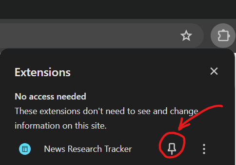
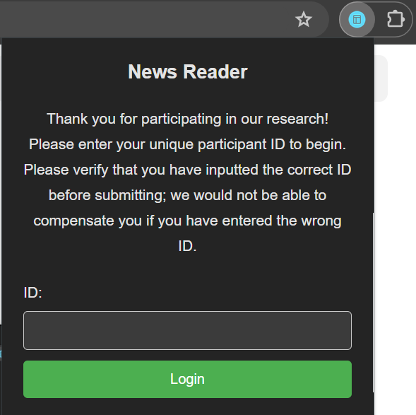
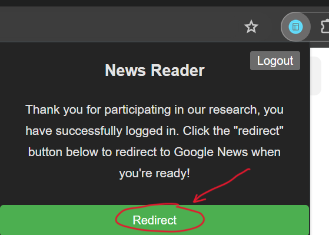
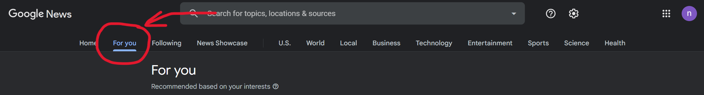

- Install the extension by copying and pasting the link below into the Google Chrome window you just opened, using the official account assigned to you. You can find the extension in the official Google Chrome Web Store as well if the link doesn't work.
https://chrome.google.com/webstore/detail/news-research-tracker/cahcdhhjliadadbbabnlkhffdlfmepca?hl=en&authuser=0
 Please verify that the account displayed on this Chrome page is the one we assigned to you, not your personal Chrome account.
Please verify that the account displayed on this Chrome page is the one we assigned to you, not your personal Chrome account.
- Your personal account activity will not be documented. There will be no compensation for your participation if you are using your own account (i.e., not the account we assign to you).

- Click 'Add Extension' to install the extension.

- Please confirm that the extension has been installed.

- Optionally, pin the extension to the taskbar for convenient access.

- Select the extension icon located in the top right corner of your screen, input your Prolific ID, then press the Login button. Please confirm the accuracy of your ID, as incorrect information may prevent us from compensating you.

- Click on 'redirect' to be taken directly to the 'For You' page on Google News.

- While navigating the 'For You' page, begin by browsing the news by selecting articles that you want to read. Note that the webpage will automatically refresh after you select a piece of news; this is the expected behavior. For the purpose of this study, there is no requirement to read the content of the news article.

- Repeat the news selection several times. The system will provide additional prompts once your browsing meets our standards. Throughout the process, please remain focused and engaged, as you will be asked to complete a follow-up survey containing questions related to the content. Our system will also employ technological tools to confirm your attentiveness. Inattention may result in a reduced payment.
- Once you have finished browsing the news and met our completion standards, our system will give you a link to the final survey. After completing this survey, you will receive a code to claim your final payment on Prolific.
- Please log out of the account that we have assigned to you.
- After 30 days, please complete the follow-up survey.